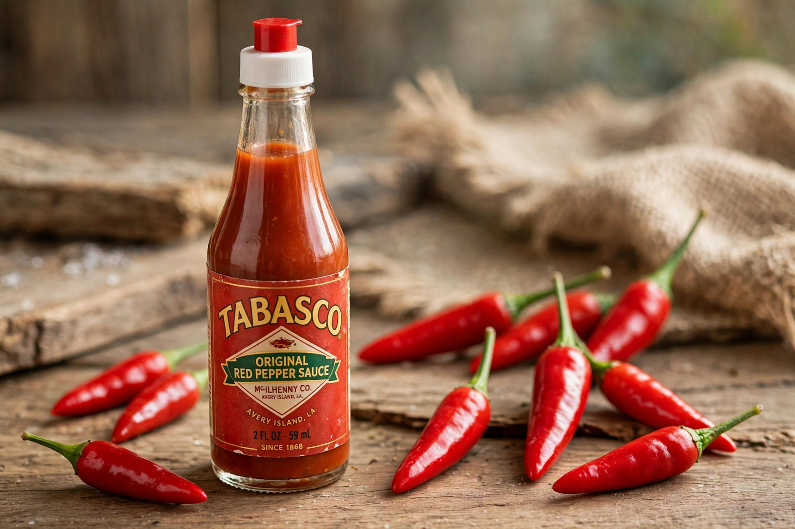

Wikipedia — the free encyclopedia

Tabasco sauce is a brand of hot sauce made from tabasco peppers, vinegar and salt, produced by the McIlhenny Company of Avery Island, Louisiana, since 1868. The peppers are mashed with salt and aged for up to three years in white oak barrels before being blended with vinegar and strained.
Edmund McIlhenny, a Maryland banker who settled in Louisiana, began making the sauce after the American Civil War, reportedly from peppers given to him by a traveller from Mexico or Central America. The family-owned company still operates on Avery Island, where a salt dome underlies the island. The name Tabasco comes from a Mexican state, after a Nahuatl-derived place name.
The original red sauce measures roughly 2,500–5,000 Scoville units. The company now makes green jalapeño, chipotle, habanero and other varieties.